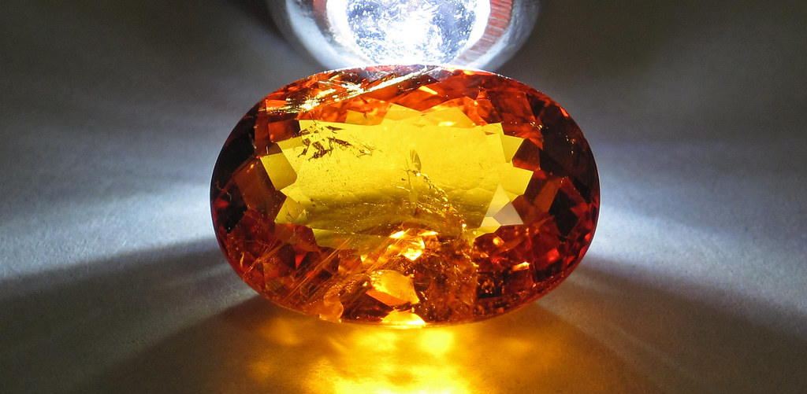

Granat
Granat (Granatus) to czerwony, przezroczysty kamień z rodziny karbunkułów, barwą przypominający kwiat dzikiego granatowca. ¹ ² Oprawiony w sygnet z czarnym podkładem lśni jaśniej. ¹ Rozwesela serce i rozprasza smutek. ¹ Niektórzy uważają, że chroni noszącego przed zarazą. ²
Opis ogólny
Opis
Granat jest czerwonym, przezroczystym kamieniem z rodziny karbunkułów. Jego barwa przypomina kwiat dzikiego granatowca, a sam kamień jest nieco ciemniejszy od karbunkułu. ¹ ² Oprawiony w sygnet z czarnym podkładem lśni jaśniej. ¹ Występuje głównie w Etiopii, a niekiedy także w piaskach morskich niedaleko Tyru. ¹ ²
Właściwości
Granat rozwesela serce i rozprasza smutek. ¹ Jest gorący i suchy. ¹ Niektórzy uważają, że chroni noszącego przed zarazą. ²
Odmiany
| Podtyp | Wygląd | Występowanie | Właściwości |
|---|---|---|---|
| Podtyp I: Ciemnoczerwony granat | Ciemnoczerwony, jak kwiat granatowca. | Nie podano. | Nie podano. |
| Podtyp II: Granat o cytrynowym odcieniu | Czerwony z cytrynowożółtym odcieniem; barwą przypomina hiacynt. | Nie podano. | Nie podano. |
| Podtyp III: Granat surian o fioletowoczerwonej barwie | Czerwonofioletowy; zwany violaceus lub surian. | Nie podano odrębnego miejsca. | Cenniejszy od pozostałych. ¹ ² |
Podtyp I: Ciemnoczerwony granat

Ciemnoczerwony okaz granatu (Wikimedia Commons).

Odmiana ta jest ciemnoczerwona, jak kwiat granatowca. ²
Podtyp II: Granat o cytrynowym odcieniu

Pomarańczowa odmiana granatu, spessartyna (Wikimedia Commons).

Odmiana jest czerwona z cytrynowożółtym odcieniem i barwą przypomina hiacynt. ² Nie jest jednak odmianą hiacyntu. ¹
Podtyp III: Granat surian o fioletowoczerwonej barwie

Fioletowoczerwony okaz rodolitu (Wikimedia Commons).

Odmianę czerwonofioletową nazywa się violaceus lub surian; jest ona cenniejsza od pozostałych. ¹ ²
Źródła
1. Św. Albert Wielki — Księga minerałów, Traktat II
Granatus (granat) jest odmianą karbunkułu — tak podaje Konstantyn, przytaczając Arystotelesa. To czerwony, przejrzysty kamień o barwie kwiatów dzikiego granatu. Jest nieco ciemniejszy od karbunkułu i lśni jaśniej, gdy osadzi się go w sygnecie na czarnym podkładzie. Istnieje też cenniejsza odmiana, w której fiolet miesza się z czerwienią; nazywa się ją violaceus. Granat ma rozweselać serce i rozpraszać smutek; według Arystotelesa jest gorący i suchy. Nieprawdą jest natomiast twierdzenie, że stanowi rodzaj hiacyntu. Występuje głównie w Etiopii, a niekiedy także w morskich piaskach niedaleko Tyru.
2. Camillo Leonardi — Speculum Lapidum
Granatus uchodzi za ognisty klejnot z rodziny karbunkułów. Wyróżnia się trzy odmiany: pierwsza jest ciemnoczerwona, jak kwiat granatu; druga — czerwona z cytrynowożółtym odcieniem, podobna do hiacyntu; trzecia, zwana surian, ma barwę czerwonofioletową i jest najdroższa. Granat występuje w Etiopii, w piaskach morskich. Ma rozweselać serce i odpędzać smutek. Niektórzy twierdzą, że chroni noszącego przed zarazą.
3. Tomasz z Cantimpré — Liber de natura rerum, Księga XIV: “O kamieniach szlachetnych”, Granatus — Garnet
Granat to piękny kamień, barwą zbliżony do rubinu, ale ciemniejszy i o głębokim, różanym odcieniu. Bardzo trudno go grawerować. Na czarnym podłożu lśni jaśniej. Rozprasza smutek i rozwesela umysł. Występuje w Etiopii i niedaleko Tyru, w piaskach wyrzucanych przez morskie fale. Istnieje odmiana fioletowoczerwona, cenniejsza od pozostałych i bardzo podobna do rubinu balasowego.